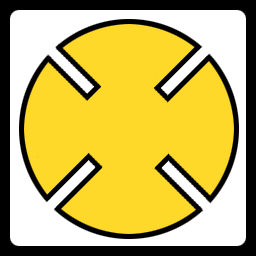
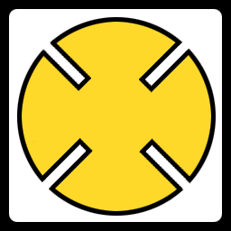

17 |
Emblemi
tribali |
 |
Esistono due tipi di carte:
Carte Simbolo Sulle carte sono presenti vari simboli raffigurati in quattro colori diversi. Quando vengono scoperte due carte con lo stesso simbolo ha inizio un duello. In genere quel che conta è il simbolo e non il colore. FATTA ECCEZIONE per il caso in cui un giocatore scopre la carta speciale SCONTRO DI COLORI...
Ecco alcune delle varie forme raffigurate sulle carte - fai attenzione alle sottili somiglianze esistenti tra carte diverse!
Cartas Flecha Hay tres tipos de Cartas Flecha. Estas son cartas especiales que no provocan Duelos regulares sino que cambian las reglas del juego.
Carta Tutti Girano Quando un giocatore scopre la carta TUTTI GIRANO ha inizio un conto alla rovescia. Al termine del conto alla rovescia, tutti i giocatori girano automaticamente una carta. In questo caso non lasciarti sfuggire l'occasione di partecipare ai duelli.
Carta Afferra in Fretta Quando un giocatore scopre la carta AFFERRA IN FRETTA, ogni partecipante può afferrare il totem. Il primo giocatore ad afferrare il totem mette tutte le sue carte scoperte nella pentola.
Carta Scontro di Colori Nel caso delle partite con almeno 4 giocatori, quando un giocatore scopre la carta SCONTRO DI COLORI, i giocatori che possiedono carte dello stesso colore devono cercare di afferrare il totem indipendentemente dal simbolo raffigurato sulle rispettive carte. Il giocatore che ha girato la carta SCONTRO DI COLORI non partecipa a questo turno.
Nel caso delle partite con 3 giocatori, le carte Scontro di Colori sono tolte dal mazzo. In questo caso invece se tutte le carte scoperte sono dello stesso colore, entra in gioco la regola AFFERRA IN FRETTA.
Lo scontro di colori prosegue finché un giocatore non afferra o fa cadere il totem o non viene scoperta un'altra Carta Freccia.
|
 



 |
 |
 |